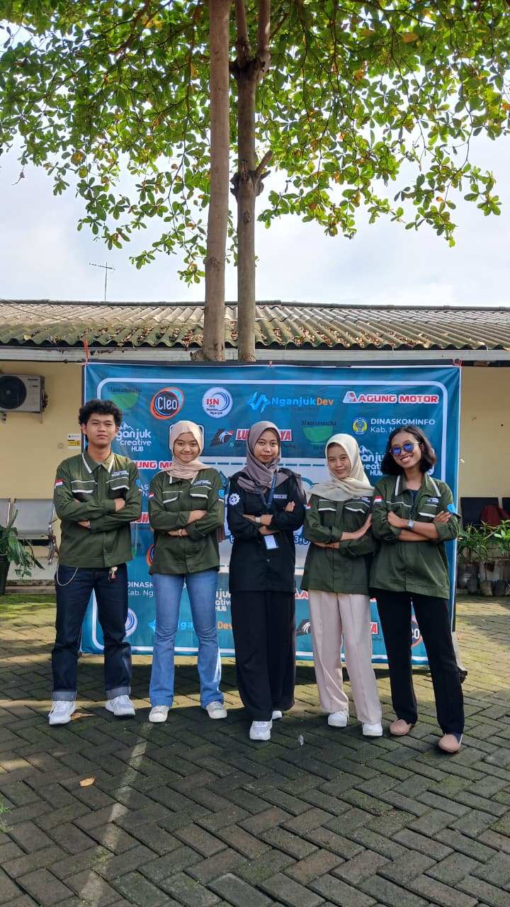

Dapur Buk Mon
Website usaha katering dengan halaman menu, layanan, testimoni, kontak, dan lokasi, lengkap dengan keranjang pesanan dan formulir hubungi kami.


Anggota Tim

- Cintya Azwa Sfrina R.H Saya
- Nila Agustin Prima Aurelia
- Ingka Jivanda Gayshela
- Etnis Supradana
- Anggelo Eriya Dewangga
Peran Saya
Tulis di sini ringkasan peranmu dalam project ini.
- Membuat antarmuka dengan HTML, CSS, dan JavaScript.
- Menerapkan tata letak responsif untuk berbagai ukuran perangkat.
- Berkolaborasi dengan tim agar tampilan sesuai kebutuhan pengguna dan fungsi sistem.
Tentang Project
Dapur Buk Mon membutuhkan website agar pelanggan mudah melihat menu, memesan hidangan untuk acara, dan menghubungi pemilik usaha.
Website ini punya beranda dengan ajakan memesan, daftar menu dengan keranjang, layanan, testimoni, kontak, dan lokasi. Tulis di sini latar belakang dan peranmu.
Fitur Utama
Menu & Layanan
Daftar hidangan dan layanan katering untuk berbagai acara.
Keranjang Pesanan
Pelanggan bisa memilih menu dan melihat jumlah pesanan di keranjang.
Testimoni
Ulasan pelanggan untuk membangun kepercayaan calon pembeli.
Hubungi Kami
Formulir pesan, informasi kontak, dan jam operasional dalam satu halaman.